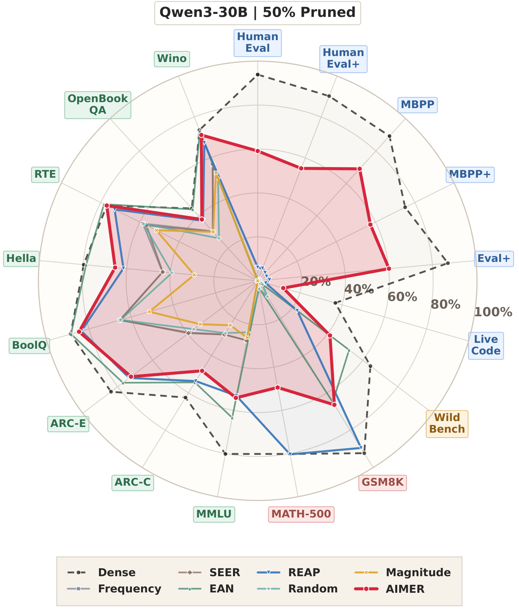
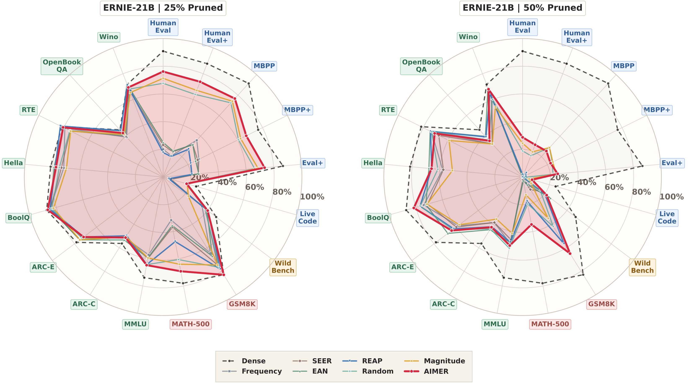

AIMER: Calibration-Free Task-Agnostic MoE Pruning
†Corresponding authors: xyuan@westlake.edu.cn, wanghuan@westlake.edu.cn
Mixture-of-Experts language models increase parameter capacity without proportional per-token compute, but deployment still requires storing all experts, making expert pruning important for reducing memory and serving overhead. Existing task-agnostic expert pruning methods are typically calibration-dependent: they estimate expert importance from routing or activation statistics on a calibration set, which makes pruning outcomes sensitive to the choice of calibration set and adds substantial preprocessing cost. We introduce AIMER (Absolute mean over root mean square IMportance for Expert Ranking), a simple calibration-free criterion that yields clear within-layer score separation and distinct expert stratification. Across 7B to 30B MoE language models at 25% and 50% pruning ratios over 16 benchmarks, AIMER consistently delivers competitive or stronger overall performance against state-of-the-art calibration-based expert pruning baselines with only 0.22-1.27 seconds for scoring the experts.
AIMER is a calibration-free criterion for task-agnostic MoE expert pruning. For each expert, it combines the gate, up, and down projection matrices into a single weight vector and scores that expert by its mean absolute value normalized by its root mean square.
AIMER(w) = ||w||1 / (sqrt(N) ||w||2)
| Method | Calibration Data | Expert Activations | Router Weights |
|---|---|---|---|
| Frequency | ✓ | × | ✓ |
| SEER | ✓ | × | ✓ |
| EAN | ✓ | ✓ | × |
| REAP | ✓ | ✓ | ✓ |
| AIMER (Ours) | × | × | × |


OLMoE-7B
0.22 s
AIMER scoring time vs 0.75 h for REAP.
ERNIE-21B
0.51 s
AIMER scoring time vs 1.37 h for REAP.
Qwen3-30B
1.27 s
AIMER scoring time vs 2.96 h for REAP.
| Model | REAP Time | AIMER Time | REAP Peak Memory | AIMER Peak Memory | Loading Memory After / Before |
|---|---|---|---|---|---|
| OLMoE-7B | 0.75 h | 0.22 s | 15.51 GB | 13.00 GB | 6.89 / 12.89 GB |
| ERNIE-21B | 1.37 h | 0.51 s | 44.72 GB | 40.85 GB | 21.67 / 40.66 GB |
| Qwen3-30B | 2.96 h | 1.27 s | 63.07 GB | 57.01 GB | 29.93 / 56.92 GB |
@misc{liu2026aimercalibrationfreetaskagnosticmoe,
title={AIMER: Calibration-Free Task-Agnostic MoE Pruning},
author={Zongfang Liu and Shengkun Tang and Yifan Shen and Huan Wang and Xin Yuan},
year={2026},
eprint={2603.18492},
archivePrefix={arXiv},
primaryClass={cs.LG},
url={https://arxiv.org/abs/2603.18492},
}